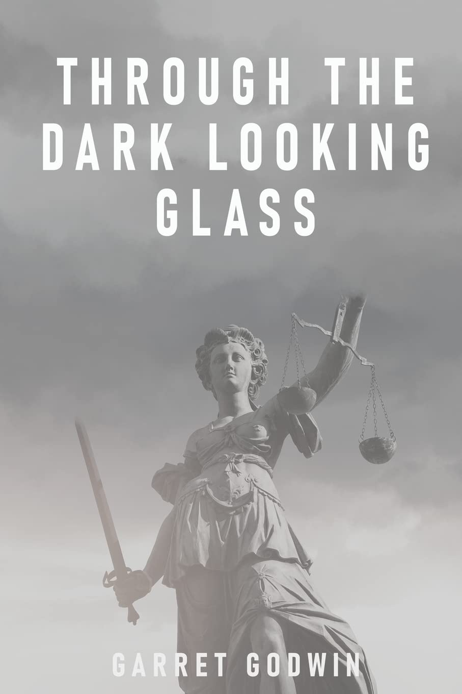

Novel · 2021
Through the Dark Looking Glass
An assistant district attorney comes face to face with the Patriot Act and the Military Commissions Act of 2006, and changes sides.
Prosecution

Civil rights
- Ira Ellingsworth, under his boss Fred Rollins, realizes this is not the destiny he wanted
- Urged to join a religious movement, he finds it hypocritical
- With Carol Langley, he is hired by Roberto Sanchez, a lawyer for the ACLU
- Ira becomes a civil rights lawyer, and an unlikely hero
Paperback · Authors’ Tranquility Press · October 8, 2021 · 280 pages · ISBN 9781956480450
Paperback on Amazon (opens in a new tab)